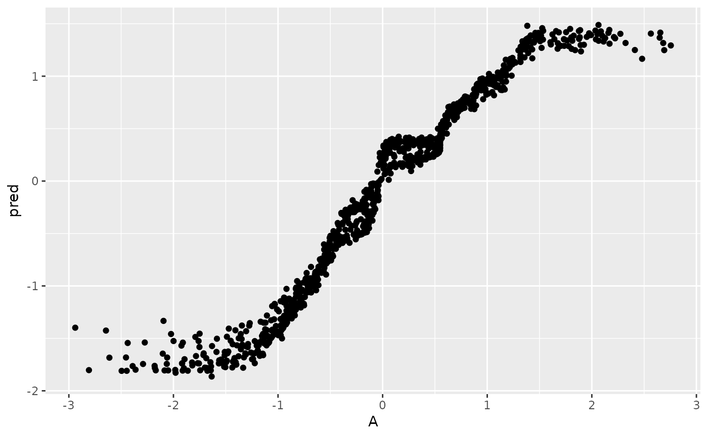

Tidy helper function for causal_forest function
causal_forest_handler.RdRuns estimates estimation function from interference package and returns tidy data frame output
Details
https://draft.declaredesign.org/complex-designs.html#discovery-using-causal-forests
See ?causal_forest for further details
Examples
library(DeclareDesign)
#> Loading required package: randomizr
#> Loading required package: fabricatr
#> Loading required package: estimatr
library(ggplot2)
#>
#> Attaching package: ‘ggplot2’
#> The following object is masked from ‘package:DeclareDesign’:
#>
#> vars
dat <- fabricate(
N = 1000,
A = rnorm(N),
B = rnorm(N),
Z = complete_rs(N),
Y = A*Z + rnorm(N))
# note: remove num.threads = 1 to use more processors
estimates <- causal_forest_handler(data = dat, covariate_names = c("A", "B"), num.threads = 1)
#> Loading required namespace: grf
ggplot(data = estimates, aes(A, pred)) + geom_point()
